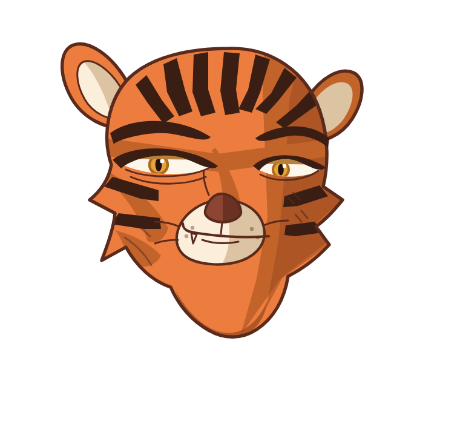
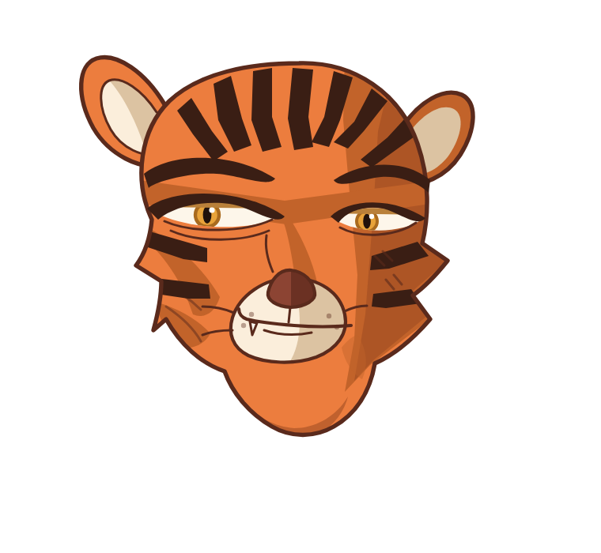
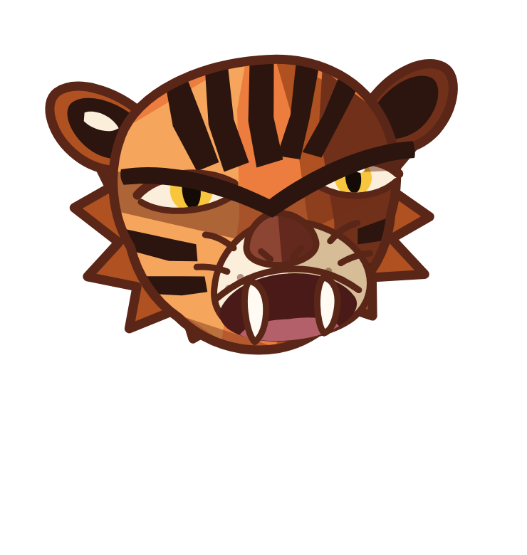

こわもてトラ — 現状
体は真横のまま、顔だけこちらを振り向かせた3/4。
全身（最新 v10）
tiger-v10
／縞の暴発と後脚の白流入を修正、脚にリング追加、3/4の顔を接続
顔 — 今日の直し
左から時系列。
l が最新
。
i（昨日の最良）／マズルが
奥側にずれて貼ってある

j／マズルを顔の中心軸へ。口の線を引いて、手前の端だけ上げた冷笑に
k／マズルを22px下げて鼻筋を伸ばし、顎を細く短く

l ＝ 最新
／顎下の影の帯（二重顎に見えていた）を削除。頬のふさのトゲも丸めた
比較：既存の子トラ（被らせない対象）と、履き違えていた頃
既存 tiger.png

e（牙を剥く方向＝不採用）
v8（縞が放射状に暴発していた頃）
v10 に残っている問題（自己診断）
顔は l に差し替え予定（v10 はまだ i の顔）
頭と首の継ぎ目が見える。頬の毛を首に溶け込ませたい
顎の下が尖って突き出ていて不自然
縞が腹の上で止まって、腹の横に無地の帯が残っている
奥の脚と手前の脚の区別が弱い
※ エージェント2体にレビュー依頼中。結果が出たら反映します。